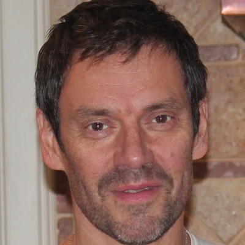

A New Era of Molecular Simulation via Neural Samplers
Learning to sample equilibrium ensembles directly from interatomic potentials
Yuanqi Du
Microsoft Research
Joint work
Joint work with
Mouyang Cheng*
MIT · MSR intern
ATLAS · JANUS
Denis Blessing*
KIT · MSR intern
ATLAS · JANUS
Carles Domingo-Enrich†
MSR New England
ATLAS · JANUS
Jiajun He
Cambridge
FEAT · RNE
Francisco Vargas
Cambridge
FEAT · RNE

Eric Vanden-Eijnden
NYU
FEAT
ATLAS : A Foundation Neural Sampler for Amorphous Materials. Cheng*, Blessing*, Yu, Neumann, Li, Domingo-Enrich†, Du †. arXiv:2607.19198JANUS : A Multimodal Foundation Neural Sampler for Disordered Materials. Blessing*, Cheng*, Schebek, Rogal, Li, Domingo-Enrich†, Du †. arXiv:2608.19116
Du *, He*, Vargas, Wang, Gomes, Hernández-Lobato, Vanden-Eijnden, FEAT (NeurIPS 2025) · He, Hernández-Lobato, Du †, Vargas†, RNE (ICLR 2026)
* equal contribution · † co-corresponding
Roadmap
Today
1
The sampling bottleneck
fundamental challenges in sampling
2
Neural samplers
path weights support estimation and inference
3
ATLAS
amorphous systems with high energy barriers
4
JANUS
joint discrete and continuous sampling
5
What comes next
open problems and future work
Condensed-phase systems
From microscopic interactions to macroscopic behavior
$\tilde\pi(x)=e^{-\beta U(x)},\qquad \beta=\dfrac{1}{k_{\mathrm B}T}$
$Z=\displaystyle\int\tilde\pi(x)\,\dd x,\qquad F=-\beta^{-1}\log Z,\qquad \langle O\rangle=\frac{1}{Z}\int O(x)\,\tilde\pi(x)\,\dd x$
Same form:
Bayesian posterior $p(\theta\mid\mathcal D)\propto p(\mathcal D\mid\theta)\,p(\theta)$
KL-regularized RL $\pi^\star(x)\propto\pi_{\mathrm{ref}}(x)\,e^{\beta\,r(x)}$
Given the energy $U$, understanding an atomistic system at finite temperature is a sampling problem .
The sampling problem
The bottleneck: local moves get trapped
Slow mixing : a barrier $\Delta$ costs $\sim e^{\beta\Delta}$ Correlated samples : long autocorrelation timesNo amortization : new $T$, $P$ or composition = new runFree energy needs extra calculation : $F$, $S$, phase boundaries
2D glass at $T=0.2$: parallel tempering needs $\sim\mathbf{10^{8}}$ energy evaluations for one free energy.
Metropolis et al. 1953 · Swendsen & Wang 1986 · Kob & Andersen 1995 · Cheng*, Blessing*, …, Domingo-Enrich†, Du †, ATLAS (2026)
Molecular simulation
From microscopic interactions to macroscopic behavior
$\tilde\pi(x)=e^{-\beta U(x)},\qquad \beta=\dfrac{1}{k_{\mathrm B}T}$
$Z=\displaystyle\int\tilde\pi(x)\,\dd x,\qquad F=-\beta^{-1}\log Z,\qquad \langle O\rangle=\frac{1}{Z}\int O(x)\,\tilde\pi(x)\,\dd x$
Same form:
Bayesian posterior $p(\theta\mid\mathcal D)\propto p(\mathcal D\mid\theta)\,p(\theta)$
KL-regularized RL $\pi^\star(x)\propto\pi_{\mathrm{ref}}(x)\,e^{\beta\,r(x)}$
Given the energy $U$, understanding an atomistic system at finite temperature is a sampling problem .
The sampling problem
The bottleneck: local moves get trapped
Slow mixing : a barrier $\Delta$ costs $\sim e^{\beta\Delta}$ Correlated samples : long autocorrelation timesNo amortization : new $T$, $P$ or composition = new runFree energy needs extra calculation : $F$, $S$, phase boundaries
2D glass at $T=0.2$: parallel tempering needs $\sim\mathbf{10^{8}}$ energy evaluations for one free energy.
Metropolis et al. 1953 · Swendsen & Wang 1986 · Cheng*, Blessing*, …, Domingo-Enrich†, Du †, ATLAS (2026)
The sampling problem
Machine-learned potentials made each step cheap, not sampling easier
cost of a simulation = cost per evaluation↓ DFT → MLIP × # energy evaluations
Machine-learned interatomic potentials
Near-DFT accuracy, orders of magnitude cheaper per call. Universal MLIPs cover most of the periodic table.
Unchanged by MLIPs
Equilibrium sampling still takes significant time.
This talk: neural samplers address this problem
Fewer evaluations × cheaper evaluations.
Behler & Parrinello 2007 · Batatia et al. 2022 · Batatia et al. 2025
Neural samplers
Neural samplers: learn the sampler instead of running a chain
Goal: $X_0\sim p_0,\qquad X_{t+1}\sim\Pf_\theta(\cdot\mid X_t)=\mathcal N\big(X_t+\mu^+_\theta(X_t,t)\,\delta,\ \sigma_t^2\delta\,I\big),\qquad X_N\approx\pi\propto e^{-\beta U}$
amortized over thermodynamic conditions
path weights → ensemble properties, free energy & steering
Noé et al. 2019 · Zhang & Chen 2022 · Vargas et al. 2023
Neural samplers · diffusion models
Learning generative models from non-equilibrium transport
The generative models behind a decade of breakthroughs:
Images & video
Ho 2020 · Song 2021 · Rombach 2022
Protein design
RFdiffusion · Watson, Nature 2023
Biomolecular structure
AlphaFold 3 · Abramson, Nature 2024
Materials
MatterGen · Zeni, Nature 2025
Molecules & docking
DiffSBDD · Schneuing, Harris, Du et al., Nat. Comput. Sci. 2024 · DiffDock 2023
Weather
GenCast · Price, Nature 2025
Two processes through the same marginals $p_t$:
$\Pb\ \text{(backward, noising, }N\to 0):$ $\mathrm dX_t=\mu^-_t(X_t)\,\mathrm dt+\sigma_t\,\mathrm d\overleftarrow{W}_t$
$\Pf\ \text{(forward, generation, }0\to N):$ $\mathrm dX_t=\mu^+_t(X_t)\,\mathrm dt+\sigma_t\,\mathrm dW_t$
Time reversal: $\textcolor{#1F7A6F}{\mu^+_t}=\textcolor{#4C72B0}{\mu^-_t}+\sigma_t^2\,\nabla\log p_t$. The only unknown is the score .
Learning a diffusion model = learning the score $\nabla\log p_t$ at every noise level.
Sohl-Dickstein et al. 2015 · Ho et al. 2020 · Song et al. 2021 · Nelson 1967 · Anderson 1982
Neural samplers · scores from data
Learning from data: denoising score matching
Noise a data point $X_N\sim\pi$:
$X_t\sim\Pb(\cdot\mid X_N)=\mathcal N\big(\alpha_tX_N,\ s_t^2I\big)\quad\Longleftrightarrow\quad X_t=\alpha_tX_N+s_t\,\varepsilon$
The denoising score identity gives the noised score:
$\nabla\log p_t(x_t)=\mathbb E_{\pi(x_N\mid x_t)}\big[\nabla_{x_t}\log\Pb(x_t\mid X_N)\big]=\mathbb E\Big[-\dfrac{X_t-\alpha_tX_N}{s_t^2}\,\Big|\,X_t=x_t\Big]$
Regress the network onto that label:
$\mathcal L_{\rm DSM}(\theta)=\displaystyle\sum_t\lambda_t\;\mathbb E\,\Big\|\,s_\theta(X_t,t)+\frac{X_t-\alpha_tX_N}{s_t^2}\Big\|^2$
Minimizer = the score $\nabla\log p_t$. Plain regression, so it scales.
But it needs clean samples $X_N\sim\pi$: exactly what we lack.
Learning from data = forward KL $\mathrm{KL}\big(\Pb\,\big\|\,\Pf_\theta\big)$: an expectation over data .
Hyvärinen 2005 · Vincent 2011 · Ho et al. 2020 · Song et al. 2021
Neural samplers · how do we train it without data?
How do we train it? How the field got here
2018 · Boltzmann generators
A normalizing flow : exact likelihood, exact reweighting.
But invertible layers limit expressiveness and scale .
2022–24 · a divergence on whole paths
$\mathrm{KL}\big(\Pf_\theta\,\big\|\,\Pb\big)=\mathbb E_{\textcolor{#E76F51}{X_{0:N}\sim\Pf_\theta}}\Big[\log\dfrac{\mathrm d\Pf_\theta}{\mathrm d\Pb}(X_{0:N})\Big]$
$\text{or}\ \ \mathrm{Var}_{X_{0:N}\sim\mathbb Q}\Big[\log\dfrac{\mathrm d\Pb}{\mathrm d\Pf_\theta}(X_{0:N})\Big]$
On the model's own paths ; the log ratio is the path weight .
But: backprop through the solver, no reuse of energy calls, mode collapse.
Without data: in some sense the reverse KL , an expectation over the model's own samples .
Noé et al. 2018 · Zhang & Chen 2022 · Vargas et al. 2023 · Berner et al. 2024 · Richter & Berner 2024 · Vargas et al. 2024
Neural samplers · scores from the target density
Learning from the target density: target score matching
DSI · learning from data: label = denoising score
$\nabla\log p_t(x_t)=\mathbb E_{\pi(x_N\mid x_t)}\big[{\color{#B4492F}\nabla_{x_t}\log\Pb(x_t\mid X_N)}\big]=\mathbb E_{\pi(x_N\mid x_t)}\Big[{\color{#B4492F}-\dfrac{X_t-\alpha_tX_N}{s_t^2}}\Big]$
TSI · learning from the target density: label = force
$\nabla\log p_t(x_t)=\mathbb E_{\pi(x_N\mid x_t)}\Big[{\color{#1F7A6F}\dfrac{1}{\alpha_t}\nabla\log\pi(X_N)}\Big]=\mathbb E_{\pi(x_N\mid x_t)}\Big[{\color{#1F7A6F}\dfrac{\beta\mathbf F(X_N)}{\alpha_t}}\Big]$
$\mathcal L_{\rm TSM}(\theta)=\displaystyle\sum_t\lambda_t\;\mathbb E\,\Big\|\,s_\theta(X_t,t)-{\color{#1F7A6F}\frac{\beta\mathbf F(X_N)}{\alpha_t}}\Big\|^2$
Same for stochastic interpolants : $X_t=\alpha_tX_N+\beta_tX_0+\gamma_t\,\varepsilon$
① label: denoising score → force , one force call per sample.
② but the expectation is still over $X_N\sim\pi$: it still needs samples.
The target density supplies the label , not the samples : not yet a learning algorithm .
De Bortoli et al. 2024 · Blessing et al., ICML 2026
Neural samplers · how do we train it without data?
How do we train it? How the field got here
2018 · Boltzmann generators
A normalizing flow : exact likelihood, exact reweighting.
But invertible layers limit expressiveness and scale .
2022–24 · a divergence on whole paths
$\mathrm{KL}\big(\Pf_\theta\,\big\|\,\Pb\big)=\mathbb E_{\textcolor{#E76F51}{X_{0:N}\sim\Pf_\theta}}\Big[\log\dfrac{\mathrm d\Pf_\theta}{\mathrm d\Pb}(X_{0:N})\Big]$
$\text{or}\ \ \mathrm{Var}_{X_{0:N}\sim\mathbb Q}\Big[\log\dfrac{\mathrm d\Pb}{\mathrm d\Pf_\theta}(X_{0:N})\Big]$
On the model's own paths ; the log ratio is the path weight .
But: backprop through the solver, no reuse of energy calls, mode collapse.
2024 · PDDS → iDEM: the right idea
Regress the score on the model's own samples ; iDEM adds a replay buffer.
But importance weights sit inside the label . High variance → fails at scale.
2025–26 · fixed-point matching
The label is one force $\beta\mathbf F(X_N)$ at the model's own endpoint: no weights inside the regression.
But regression does not fix the mode weights .
ATLAS · JANUS = fixed-point matching + the path-weight loss as a regularizer for the mode weights.
Noé et al. 2018 · Zhang & Chen 2022 · Vargas et al. 2023 · Berner et al. 2024 · Richter & Berner 2024 · Vargas et al. 2024 · Phillips et al. 2024 · Akhound-Sadegh et al. 2024 · He*, Du * et al. 2025 · Havens et al. 2025 · Liu et al. 2025 · Blessing et al. 2026 · Havens et al. 2026
Neural samplers · no data at all
Fixed-point training: the model proposes, the physics corrects
$s^{(k+1)}=\arg\min_s\displaystyle\sum_t\lambda_t\;\mathbb E_{X_{0:N}\sim\Pf_{s^{(k)}}}\Big[\textcolor{#E76F51}{\bar w^{\lambda_k}}\;\Big\|\,s(X'_t,t)-\frac{1}{\alpha_t}\beta\mathbf F(X_N)\Big\|^2\Big],\qquad X'_t=\alpha_tX_N+s_t\varepsilon$
$\bar w$: the self-normalized path weight (next slides) · $\lambda_k\in[0,1]$: annealing schedule
Expensive, once per sample ① generate: a full rollout · ② label: one force call
Cheap, repeated ③ interpolate: fresh noise · ④ regress
Expensive steps get repeated use; interpolant training is cheap.
Blessing et al., ICML 2026 · Havens et al. 2025
Neural samplers · no data at all
Forces find the modes; path weights fix their weights
$\pi$ is a fixed point; the path weight $\textcolor{#E76F51}{\bar w}$ fixes the mode weights. Next: where that weight comes from.
Blessing et al., ICML 2026
Neural samplers · reweighting
Reweighting with flows: pros and cons
$x\sim p_\theta,\qquad w=\dfrac{\tilde\pi(x)}{p_\theta(x)}\qquad\Longrightarrow\qquad Z=\mathbb E_{p_\theta}[w],\qquad \mathbb E_\pi[f]=\mathbb E_{p_\theta}[f\,w]\,/\,\mathbb E_{p_\theta}[w]$
Likelihood $p_\theta(x)$ : a convenient choice
$\log p_\theta(x)=\log p_0(z)-\log\big|\det\partial_z f_\theta(z)\big|$
Pro: exact likelihood in one pass.
Con: invertible layers, a Jacobian determinant.
$\log p_\theta(X_N)=\log p_0(X_0)-\displaystyle\int_0^N\!\nabla\!\cdot v_\theta(X_t,t)\,\dd t$
Pro: any network.
Con: a divergence at every step.
$p_\theta(X_N)=\displaystyle\int p_0(x_0)\prod_t\Pf(x_{t+1}\mid x_t)\,\dd x_{0:N-1}$
Pro: any network; Gaussian steps.
Con: the likelihood is an integral over all paths.
With noise, the likelihood is expensive to calculate, but the path weight is the key quantity for estimation and inference.
Jarzynski 2002 · Rezende & Mohamed 2015 · Chen et al. 2018 · Grathwohl et al. 2019 · Noé et al. 2019 · Albergo et al. 2019 · Gabrié et al. 2022
Neural samplers · path weights
Path weights: trajectory balance generalizes Bayes' rule
Trajectory balance
$p_0(X_0)\prod_t\Pf(X_{t+1}\mid X_t)=p_N(X_N)\prod_t\Pb(X_t\mid X_{t+1})$
a generalization of Bayes' rule , its one-step case
$p_t(X_t)\,\Pf(X_{t+1}\mid X_t)=p_{t+1}(X_{t+1})\,\Pb(X_t\mid X_{t+1})$
intractable marginals = a ratio of tractable kernels : no Jacobian, no divergence
Path weight $\;w(X_{0:N})=\dfrac{\tilde\pi(X_N)\prod_t\Pb(X_t\mid X_{t+1})}{p_0(X_0)\prod_t\Pf(X_{t+1}\mid X_t)}\;$ for arbitrary kernels . $W=-\log w$ is the physical work
Crooks 1999 · Neal 2001 · Del Moral, Doucet & Jasra 2006 · Malkin et al. 2022 · He, Hernández-Lobato, Du †, Vargas†, RNE (ICLR 2026)
Neural samplers · path weights
Path weight for inference and estimation
what we want: an average under the target $\pi\propto e^{-\beta U}$
$\mathbb E_\pi[f]=\displaystyle\int f(x_N)\,\textcolor{#E76F51}{\pi(x_N)}\,\dd x_N$
1
insert the backward kernels ; they integrate to one
$=\displaystyle\int f(x_N)\,\textcolor{#E76F51}{\pi(x_N)}\,\textcolor{#4C72B0}{\prod_t\Pb(x_t\mid x_{t+1})}\;\dd x_{0:N}$
2
multiply and divide by the forward path density
$=\displaystyle\int f(x_N)\,\underbrace{\frac{\textcolor{#E76F51}{\pi(x_N)}\,\textcolor{#4C72B0}{\prod_t\Pb(x_t\mid x_{t+1})}}{\textcolor{#1F7A6F}{p_0(x_0)\prod_t\Pf(x_{t+1}\mid x_t)}}}_{w(x_{0:N})}\;\textcolor{#1F7A6F}{p_0(x_0)\prod_t\Pf(x_{t+1}\mid x_t)}\;\dd x_{0:N}$
3
read it as an average over
generated paths self-normalized importance sampling (SNIS ) on path space, for arbitrary kernels with full support
$=\mathbb E_{\Pf}\big[\,f(X_N)\,w(X_{0:N})\,\big]$
free energy
$Z=\mathbb E_{\Pf}[w]=\mathbb E_{\Pf}\big[e^{-W}\big]$
estimation · Jarzynski equality self-normalized importance sampling
$\mathbb E_\pi[f]=\mathbb E_{\Pf}[f\,w]\,/\,\mathbb E_{\Pf}[w]$
estimation tilting, $\pi\to h\,\pi$
$\mathbb E_q[f]=\mathbb E_{\Pf}[f\,h\,w]\,/\,\mathbb E_{\Pf}[h\,w]$
inference
The model's likelihood: conditional expectation over paths, ELBO
$p_\theta(X_N)=\mathbb E_{\Pb(\cdot\mid X_N)}\Big[\dfrac{p_0(X_0)\prod_t\Pf(X_{t+1}\mid X_t)}{\prod_t\Pb(X_t\mid X_{t+1})}\ \Big|\ X_N\Big]$
Du , blog: Pushing Probabilistic ML Out of Equilibrium, Part 5 · Jarzynski 1997 · Neal 2001 · Du *, He* et al., FEAT (NeurIPS 2025) · He, Hernández-Lobato, Du †, Vargas†, RNE (ICLR 2026)
Neural samplers · steering
Steering: sample a tilted target with the same weights
1
tilt the target; same derivation with $\pi\to h\,\pi$
$\textcolor{#6B5E9B}{q_N}\propto h\,\pi,\quad h=e^{\eta r}\quad\Rightarrow\quad\text{weight }h(X_N)\,w$
$h$: property reward · umbrella window $e^{-\beta u(\xi)}$ · new temperature $\pi^{\gamma-1}$
2
sharp $h$: one final weight is noisy, so switch it on along the path, targets $\textcolor{#6B5E9B}{q_t}$
$G_t=\dfrac{\textcolor{#6B5E9B}{q_{t+1}}(X_{t+1})\,\textcolor{#6B5E9B}{\Qb}(X_t\mid X_{t+1})}{\textcolor{#6B5E9B}{q_t}(X_t)\,\textcolor{#6B5E9B}{\Qf}(X_{t+1}\mid X_t)}$
$W_t=-\log G_t$ is the work of one step; $\prod_tG_t$ telescopes to the full path weight.
3
SMC uses the work to reweight : $w\leftarrow w\,e^{-W_t}$; resample when the ESS drops.
4
APT (parallel tempering) uses the work to swap : one replica per level $\textcolor{#6B5E9B}{q_t}$; neighbours swap with probability $\min\{1,e^{-(W_\uparrow-W_\downarrow)}\}$.
No retraining : one base sampler reaches any tilted target.
Wu et al. 2023 · He, Hernández-Lobato, Du †, Vargas†, RNE (ICLR 2026) · Zhang, Potaptchik, He, Du , Doucet, Vargas, Dau, Syed, APT (2025) · He, …, Du , Syed, Vargas, CREPE (ICLR 2026)
Part I
ATLAS
A foundation neural sampler for amorphous materials
Mouyang Cheng*, Denis Blessing*, Botao Yu, Gerhard Neumann, Mingda Li, Carles Domingo-Enrich†, Yuanqi Du †arXiv:2607.19198 (2026)
ATLAS · amorphous materials
Amorphous materials: properties come from ensembles
Why they matter
phone screens optical fibres thin-film solar cells metallic glasses glass-ceramics
“The deepest and most interesting unsolved problem in solid state theory is probably the theory of the nature of glass and the glass transition.”P. W. Anderson, 1995
Why they are hard : below $T_g$, equilibration needs rare collective rearrangements.No data : no database of equilibrated amorphous ensembles.
Anderson, Science 267, 1615 (1995)
ATLAS · method
ATLAS: an interpolant on the periodic cell, supervised by forces
Uniform prior on the periodic cell; wrapped interpolant to the sample $X_N$.Force labels at every $t$; velocity and score from one network.One E(3)-equivariant GNN , conditioned on $T$ and composition.Local : train on small cells, sample large ones.
Cheng*, Blessing*, …, Domingo-Enrich†, Du †, ATLAS (2026) · Blessing et al., ICML 2026 · De Bortoli et al. 2024 · Schütt et al. 2021
ATLAS · validation
One model from liquid to glass: 2D Kob–Andersen
$g(r)$ and $p(E)$ match parallel tempering
— PT-MCMC — ATLAS
Free energy from path weights (Jarzynski)
Energy evaluations at $T=0.2$
Glass at $T=0.2$: free-energy error $2\times10^{-3}$, >500× fewer energy evaluations.
Cheng*, Blessing*, …, Domingo-Enrich†, Du †, ATLAS (2026) · Shirts & Chodera 2008
ATLAS · metallic glasses
Metallic glasses: steering, one model for all compositions, design
Steering to experimental short-range order
One model across compositions
~300×
less compute over 480 compositions
36 GPU-h once, against ~20 GPU-h per composition from scratch
Agentic design : Pareto front in 480 evaluations
Train once, inference many times : a new target, composition or design goal is one inference, not a new simulation.
Cheng*, Blessing*, …, Domingo-Enrich†, Du †, ATLAS (2026) · He, Hernández-Lobato, Du †, Vargas†, RNE (ICLR 2026)
ATLAS · metallic glasses
Steering metallic glasses: experiment and properties
CuZr, CrCoNi
EAM potentials, $N=128$
Short-range order : matches experiment; SMC toward $q_N\propto\pi\,e^{-\eta(\alpha-\alpha^\ast)^2}$ moves the whole distribution .
Bulk modulus : reward on the Tweedie estimate $\hat X_N(X_t)$; SMC enriches rare stiff glasses.
Cheng*, Blessing*, …, Domingo-Enrich†, Du †, ATLAS (2026) · Cowley 1950 · He, Hernández-Lobato, Du †, Vargas†, RNE (ICLR 2026)
ATLAS · foundation model
A foundation model across composition space
36 GPU-h
one-time pretraining
~20 GPU-h
per composition, from scratch
~300×
less compute over 480 compositions
Zero-shot on a new composition already beats the best from-scratch run.
Cheng*, Blessing*, …, Domingo-Enrich†, Du †, ATLAS (2026)
ATLAS · agentic design
Agentic inverse design: LLM agent × ATLAS × universal MLIP
Task : ≤5 of 8 elements; universal MLIP; objectives $B$, $G$, $B/G$.
Result : Pareto front converges within 480 ATLAS evaluations.
Design rules : Co, Ni, Ti in every Pareto alloy.
Cheng*, Blessing*, …, Domingo-Enrich†, Du †, ATLAS (2026)
Part II
JANUS
A multimodal foundation neural sampler for chemically disordered materials
Alloys stainless steel jet-engine superalloys high-entropy alloys
Defects dopants in silicon chips colour centres in diamond
Denis Blessing*, Mouyang Cheng*, Maximilian Schebek, Jutta Rogal, Mingda Li, Carles Domingo-Enrich†, Yuanqi Du †arXiv:2608.19116 (2026)
JANUS · beyond NVT
Beyond the canonical ensemble
$p(x)\propto e^{-\beta U}$
$p(x,v)\propto e^{-\beta(U+Pv)}$
$p(a,x,v)\propto e^{-\beta(U+Pv-\mu\cdot N)}$
$p(a,x)\propto e^{-\beta(U-\mu\cdot N)}$
on a lattice : each site holds a species or a vacancy
Mixed state: who sits on each site (discrete $a$) × how far from it $(x,v)$; path weights carry over unchanged.
Blessing*, Cheng*, …, Domingo-Enrich†, Du †, JANUS (2026) · Schebek et al. 2024
JANUS · method
JANUS: masked discrete × continuous diffusion
Species : masked diffusion, each site revealed once; path weight in closed form .Displacements, volume : the same interpolant, from Gaussian priors.One equivariant GNN, conditioned on $(T,\Delta\mu)$.
Austin et al. 2021 · Sahoo et al. 2024 · Shi et al. 2024 · Ou et al. 2025 · Blessing*, Cheng*, …, Domingo-Enrich†, Du †, JANUS (2026)
JANUS · discrete training signal
What is the discrete analogue of a “score”?
With data : cross-entropy against the one-hot clean symbol.Without data : one-hot labels from its own samples, and every model would be a fixed point .Soft label instead : all other sites fixed, vary one, renormalize$\rho_i(b\mid\mathbf a_{-i},\mathbf x)=\dfrac{\tilde\pi(\mathbf a_{i\to b},\mathbf x)}{\sum_{b'}\tilde\pi(\mathbf a_{i\to b'},\mathbf x)}$
The soft label is the discrete “score” : its conditional expectation is the exact posterior$q^\star_i(b\mid\mathbf a_t,\mathbf x_t)=\mathbb E\big[\,\rho_i(b\mid\mathbf a_{-i},\mathbf x)\,\big|\,\mathbf a_t,\mathbf x_t\big]$
Blessing*, Cheng*, …, Domingo-Enrich†, Du †, JANUS (2026) · He, Blessing, Cheng, Du , Domingo-Enrich, DIG-IN (arXiv:2610.01739)
JANUS · validation
Validation: Ising, and Cu–Ni with all three channels
2D Ising : one model over $(T,\Delta\mu)$ matches MCMC through $T_c$.fcc Cu–Ni : species, displacements and volume match reference MC.Size transfer : trained at $N=108$, accurate at $N=256$.
Blessing*, Cheng*, …, Domingo-Enrich†, Du †, JANUS (2026)
JANUS · phase diagrams
From free energy to phase diagrams
Fixed composition : reveal exactly $n$ B atoms.Path weights : $Z_n=\mathbb E_{\Pf}[w]$, so $G(n)=-k_{\mathrm B}T\log Z_n$ .Common tangent on $G_{\mathrm{mix}}(x)$ → coexisting phases.fcc vs bcc : one model per lattice, on a common absolute scale.
Frenkel & Ladd 1984 · Schebek et al. 2024 · Blessing*, Cheng*, …, Domingo-Enrich†, Du †, JANUS (2026)
JANUS · phase diagrams
Phase diagrams with ~10³× fewer energy evaluations
Energy evaluations : reference MC (dark) vs JANUS (light), training included.
Miscibility gap (Cu–Ag) and fcc/bcc competition (Ni–Cr) recovered.
Blessing*, Cheng*, …, Domingo-Enrich†, Du †, JANUS (2026)
JANUS · discovery
Grand-canonical sampling for defect discovery
Sampler : one $\mu VT$ model per host (Si, diamond): 15 dopants + vacancy.
Screen : 8,000 samples → enriched pairs and triplets → hybrid DFT.
Found : known centres re-emerge (Si E centre, Ge–V); new: S–Ti (Si), B–O–O (diamond).
Blessing*, Cheng*, …, Domingo-Enrich†, Du †, JANUS (2026)
Summary
One recipe, two foundation samplers
ATLAS JANUS materials amorphous: glasses, metallic glasses crystalline disorder: alloys, dopants, vacancies state positions on the periodic cell $\mathbb T^{dN}$ species $\mathbf a$ (discrete) + displacements $\mathbf u$ + log-volume $v$ ensembles $NVT$ $NPT$, $\Delta\mu NPT$ (semi-grand), $\mu VT$ (grand canonical) labels forces $\beta\mathbf F(X_N)$ forces, virial + single-site conditionals $\rho_i$
Generate → label with exact local statistics → interpolate → regress
Cheng*, Blessing*, …, Domingo-Enrich†, Du †, ATLAS, arXiv:2607.19198 · Blessing*, Cheng*, …, Domingo-Enrich†, Du †, JANUS, arXiv:2608.19116
Outlook
A new era: simulation becomes inference
Even with universal MLIPs, one blocker remains: sampling equilibrium ensembles is too slow to explore unknown chemical space.
Train once, inference many times : a new temperature, composition or design goal is one inference, not a new simulation.
Outlook
Open problems
Mode weights : local labels cannot see basin masses.Path weights can have high variance.Interpolants : what makes a good one?Generality : off-lattice insertion and deletion, flexible cells, melting. next: OMNIA Dynamics and theory : kinetics; convergence guarantees. next: Pharos
Toward a universal neural sampler, as broadly useful as today's universal MLIPs.
Future work · OMNIA
OMNIA: one sampler for every ensemble
$NVT$ · glasses $NPT$ · polymorphs $\Delta\mu NPT$ · alloys, melts $\mu VT$ · surfaces, electrodes
Grand canonical, $\mu VT$: the number of atoms fluctuates
$p(x,N)\;\propto\;e^{-\beta\,(U(x)-\mu N)}$
GCMC: one insertion or deletion at a time
OMNIA : one sampler for every ensemble, from melts to surfaces and electrodes.
Cheng*, Blessing*, He, Li, Domingo-Enrich†, Du †, OMNIA (in preparation) · Adams 1975
Future work · rare events
From how likely to how fast: learning to control rare events
This talk: a simple reference process
$X_t=\alpha_tX_N+s_t\,\varepsilon$
bridges of an interpolant, chosen by us
Now: a physical reference process
$\mathrm dZ_t=b(Z_t)\,\mathrm dt+\sigma\,\mathrm dW_t,\qquad Z=(x,v)$
underdamped Langevin dynamics: it waits in $A$
Controlled dynamics
$\mathrm dZ^u_t=\big[b(Z^u_t)+\sigma\,u_t(Z^u_t)\big]\,\mathrm dt+\sigma\,\mathrm dW_t$
optimal control $u^*=\sigma^\top\nabla\log q$: every path reaches $B$ before $A$
The committor $q(z)=\mathbb P_z(\tau_B<\tau_A)$ gives kinetics and rates: REACT → Pharos .
Du , He, Zhang, Vanden-Eijnden, Domingo-Enrich, REACT (arXiv:2604.13213) · He*, Chen*, …, Domingo-Enrich†, Du †, Pharos (in preparation)
Autoregressive transport
Autoregressive models are non-equilibrium processes too
Forward kernel: append a token generate
$\Pf_i(x_{0:i}\mid x_{0:i-1})=p(x_i\mid x_{\lt i})$
Backward kernel: delete the last token trivial
$\Pb_{i-1}(x_{0:i-1}\mid x_{0:i})=\dfrac{p_{i-1}(x_{0:i-1})\,\Pf_i(x_{0:i}\mid x_{0:i-1})}{p_i(x_{0:i})}=1$
Path weight exact likelihood
$\displaystyle\prod_i\frac{\Pf_i(x_{0:i}\mid x_{0:i-1})}{\Pb_{i-1}(x_{0:i-1}\mid x_{0:i})}=\prod_i p(x_i\mid x_{\lt i})=p(x)$
The same path weights apply: steer language models to $p^\beta$, $p\,e^{r}$ or $p\,p'$ with SMC and replica exchange.
He, Guo, Hernández-Lobato, Du , Recipes for Steering and Scaling LLMs via Sampling (2026)
Thank you!
Questions are very welcome.
ATLAS · arXiv:2607.19198 · JANUS · arXiv:2608.19116Related: FEAT (NeurIPS 2025) · RNE (ICLR 2026) · DIG-IN (Discrete Neural Sampler, arXiv:2610.01739)
yuanqidu@microsoft.com · yuanqidu.github.io · @YuanqiD